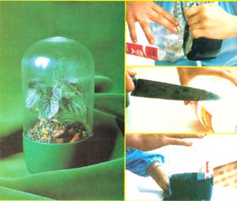

TOP, RIGHT: First, pop off the plastic bottle's colored bottom (get a finger under it and pull). CENTER, RIGHT: Then, cut the clear inner bottle, just below its upper bulge. BOTTOM, RIGHT: Finally, make a two-inch slit down one side of the resulting dome, overlap the cut's edges, and fit the rounded piece into the flat-bottomed base. LEFT: And there you have it ... an attractive (and efficient!) recycled soda bottle terrarium!